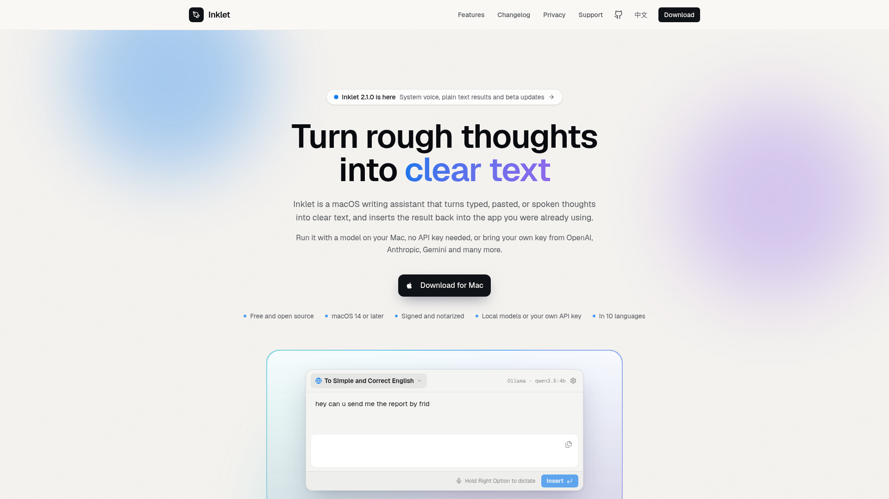
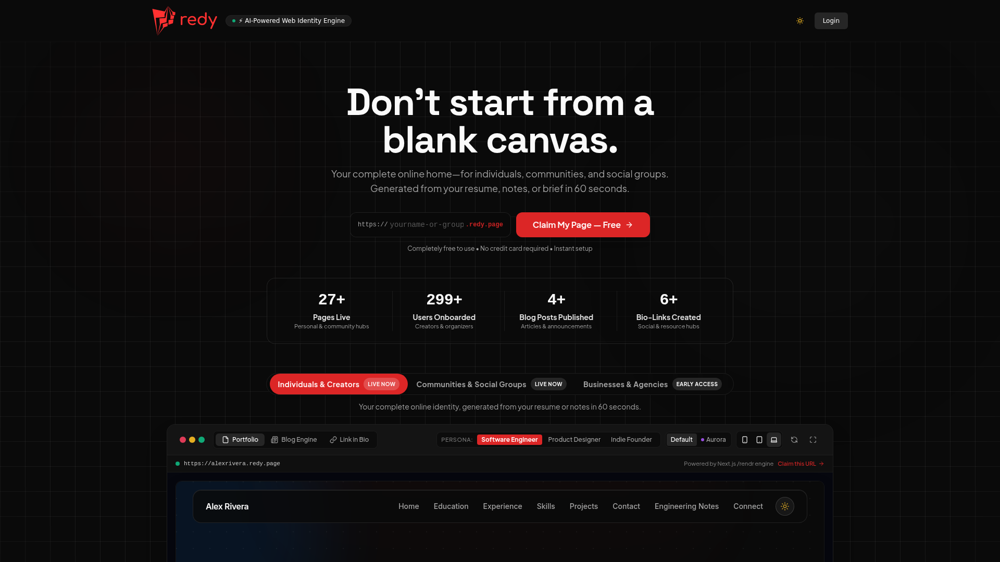
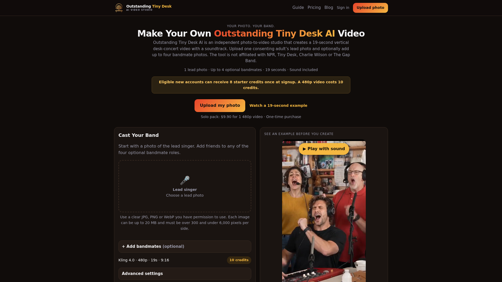
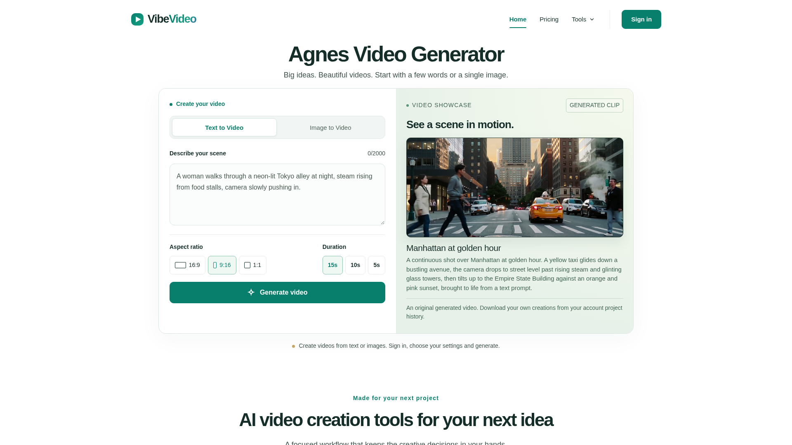

10月31日 周六

Inklet（macOS 中文转英文写作助手）
常驻 Mac 菜单栏的免费开源写作助手：任意输入框里按快捷键，把中文口语或草稿改成自然的英文（也支持改写、总结、听写、翻译），结果直接填回原输入框。

redy（AI 个人主页生成器）
把简历、简介或一段文字描述，在 60 秒内生成一个能直接上线的个人网站、博客或社区主页，无需拖拽建站也不需要自己搞托管。
小道（中英双语八字排盘站）
一个把真太阳时、节气交接、历史夏令时等历法边界都算准的中英双语东方术数网站，提供八字详批报告、奇门遁甲择时和生活化小工具。

Outstanding Tiny Desk AI（桌面演唱会视频生成）
上传一张本人照片（最多再加 4 位乐队成员），就能生成一段 19 秒的竖屏「桌面演唱会」视频，自带配乐和舞台感。

Agnes Video Generator（在线 AI 视频生成站）
不用剪辑和拍摄，输入一段文字或上传一张图片，几分钟内生成带声音的短视频；站内还集成哭泣视频、桌面演出、Talking Avatar 等模板化玩法。